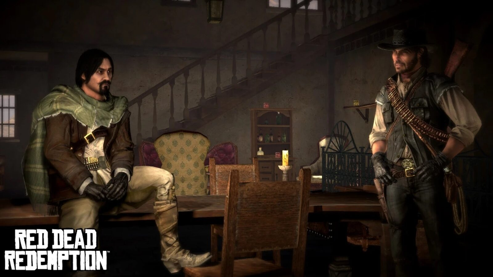
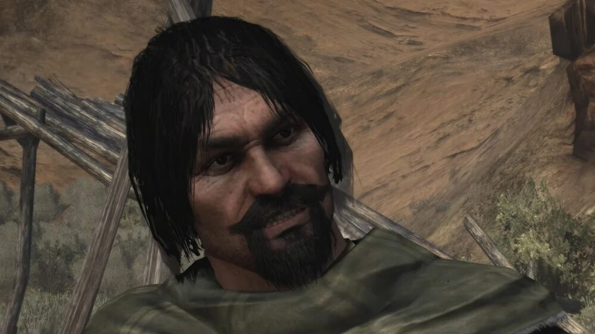
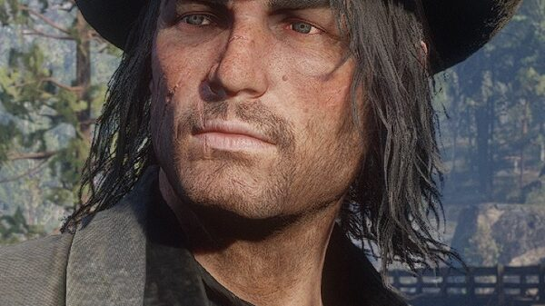
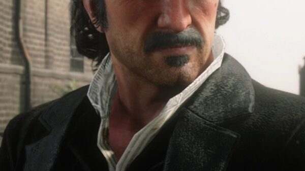
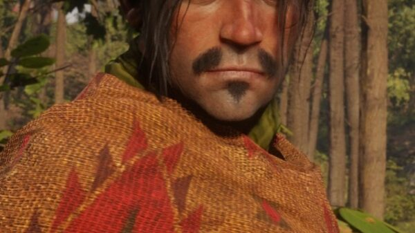
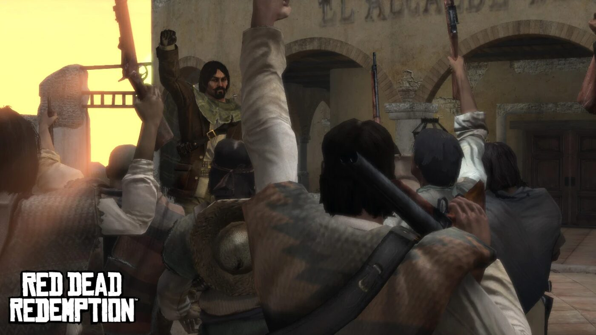

Character · Nuevo Paraíso
Abraham Reyes
Abraham Reyes is the charismatic leader of the Mexican revolution in Red Dead Redemption, and an ally of convenience to John Marston in Nuevo Paraíso. Vain and self-serving beneath the speeches, he uses the rebellion to make himself ruler of Mexico.
His path crosses John's because the rebellion helps John reach the fugitives Bill Williamson and Javier Escuella.
- Born
- c. 1881
- Status
- Alive (President of Mexico)
- Nationality
- Mexican
- Role
- Revolutionary leader
- Games
- Red Dead Redemption
Biography
Saved, and saving
In "Must a Savior Die?", John rescues Reyes from execution by the Mexican Army at El Presidio. Reyes later returns the favour, sniping the executioner about to kill John in Chuparosa. In "The Great Mexican Train Robbery", the two rob an army train, and Reyes speaks admiringly of John's old leader Dutch van der Linde.
The march on Escalera
In "The Gates of El Presidio", Reyes's rebels storm the fort so John can reach Javier Escuella. In "An Appointed Time", they march on Escalera to overthrow Colonel Agustín Allende, and chase Allende's coach carrying Bill Williamson; the player chooses which man John kills, and Reyes shoots the other.
Personality
Reyes is charismatic and a gifted speaker, but vain and self-serving. He repeatedly calls his devoted follower Luisa Fortuna by the wrong name.
Relationships

John Marston
His ally of convenience during the revolution; they save each other more than once.

Dutch van der Linde
John's former gang leader, whose anti-establishment ideology Reyes openly admires.

Bill Williamson
A fugitive John hunts; the rebellion's final battle brings them face to face.

Javier Escuella
Another fugitive John pursues, reached through Reyes's assault on El Presidio.
The betrayal
Reyes overthrows President Ignacio Sanchez, wins over the army with promises of higher pay, and installs himself as President of Mexico in November 1911. By 1914 he has reneged on every promise: he rules as a dictator, delays elections, and is accused of massacring peaceful protesters, while publicly denying he is a tyrant.
Behind the scenes
Abraham Reyes appears in Red Dead Redemption (2010) and its 2024 remaster. He is voiced by Josh Segarra, and is modelled largely on the real revolutionary Francisco Madero.
Trivia
- His surname, "Reyes", means "kings" in Spanish, a pointed nod to his ambitions.
- The march on Escalera mirrors the real 1911 Battle of Ciudad Juárez.
- He wears a Confederate States belt buckle.
Gallery
